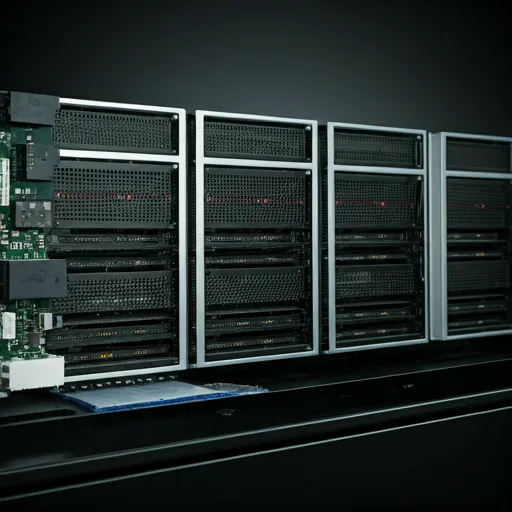
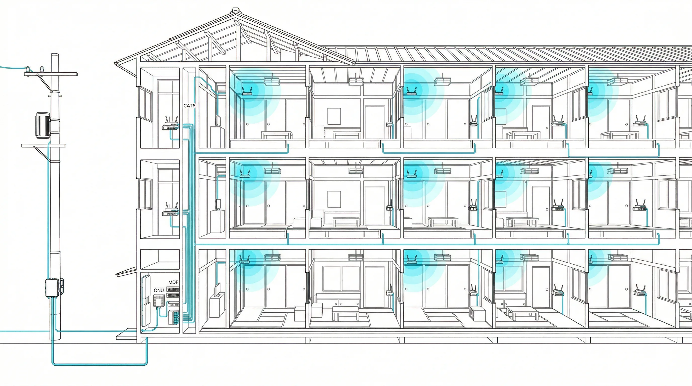
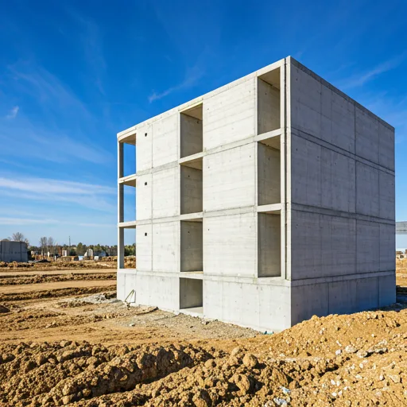
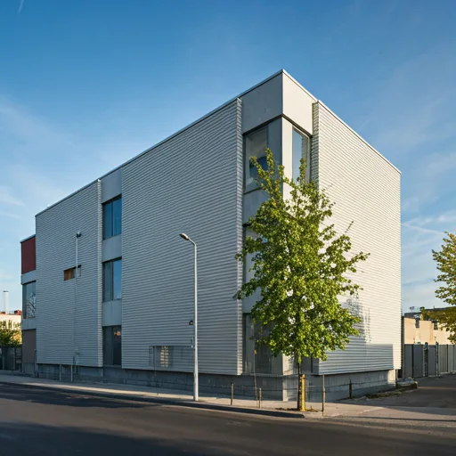
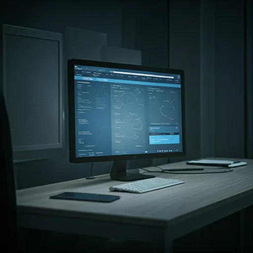

Core 01
Planned Line Switching
建物単位の利用傾向を前提に回線負荷を平準化。ピーク帯に偏りやすい小規模集合住宅でも、体感品質と収益性の両立を狙える構成です。
- 利用帯域を見ながら配分
- 障害時の切替手順を標準化
- 導入後の再調整コストを抑制

大規模向け設備の横流しではなく、共用部の広さ、階数、入居密度に合わせて構成を最適化。
3分以内に異常検知。遠隔から原因切り分け、再起動、設定変更まで踏み込める体制。
新築導入だけでなく、築古リノベでも使いやすいように、増設余地と保守性を初期設計へ織り込む。
技術基盤

Core 01
建物単位の利用傾向を前提に回線負荷を平準化。ピーク帯に偏りやすい小規模集合住宅でも、体感品質と収益性の両立を狙える構成です。

Core 02
狭いEPSや共用部にも収まりやすい、省スペース・低発熱前提のハードウェア設計。
Core 03
電源復旧や設定変更を遠隔から扱えるため、保守フローを属人化させません。
Core 04
物件管理とネットワーク管理を切り離さず、管理会社が状況把握しやすい運用面を整えます。
Boot Controller
自社開発のクラウド管理基盤（AWS）。遠隔から機器の再起動、設定変更、診断テストまで完結。
現場管理システム
光回線を建物MDFへ引き込み。
現場管理システムの指示に従い、ルーター・スイッチを設置。
スマートフォンからPPPoE設定を流し込み、Ping・ブラウジングテストで確認。
写真で完了報告。Zabbix監視を開始し、24/365の遠隔保守体制に移行。
24/365 監視
異常検知から3分以内に判定。Chatwork経由で即時通知。
活用事例

設計段階から回線を組み込み、入居初日から利用可能な状態で引き渡し。募集時点で通信品質を訴求できます。

築古物件でも、大掛かりな工事を避けながら Wi-Fi と共用設備を更新。付加価値と保守性を両立します。

エリア内に点在する小規模物件をまとめて遠隔監視。少人数チームでも現場移動を増やさずに運用できます。
お問い合わせ
現地調査・概算見積もりは無料です。建物規模、築年数、既存回線の状態が分かる範囲で構いません。 まずは運用上の課題から共有してください。